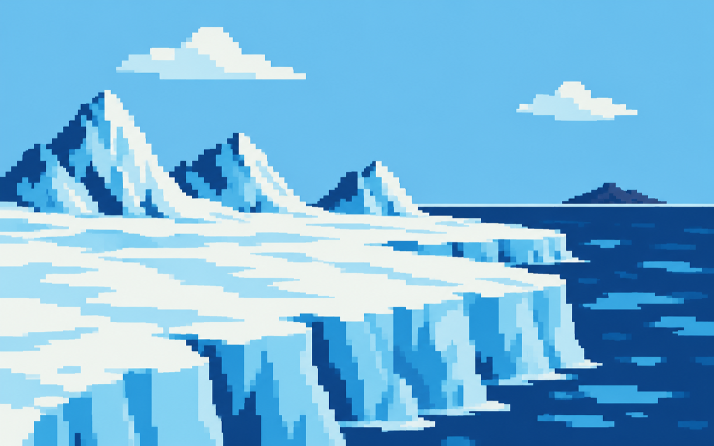

Free oxygen begins a major rise.

ISLAND 03 · THE LONG TURN
THE PROTEROZOIC
2.5 BILLION–538.8 MILLION YEARS AGO
Oxygen changed the planet. Continents joined and split, ice may have reached low latitudes, and complex multicellular life began its slow arrival.
← BACK TO MAP◆ABOUT THE PROTEROZOIC
Photosynthetic microbes helped transform surface chemistry during the Great Oxidation Event, roughly 2.4 billion years ago. Oxygen was not a fast reward for every organism: it changed habitats and drove major ecological upheaval. Much later, the Ediacaran Period preserves the first large, complex communities of soft-bodied organisms.
▶WATCH THE CLUE
▶OPEN VIDEO
Follow the long transformation of atmosphere, climate, and early
multicellular life.
WATCH ON YOUTUBE ↗
WATCH ON YOUTUBE ↗
◷KEY EVENTS TIMELINE
Complex cells with nuclei are established.
Severe global glaciations mark the Neoproterozoic.
Ediacaran organisms appear before the Cambrian.
Several timings represent broad intervals because the Proterozoic spans almost two billion years.
?FIELD NOTES
THE OXYGEN TURN
Oxygen rose as a global force around the Archean–Proterozoic boundary.
SNOWBALL EARTH?
Evidence points to very extensive glaciations, though the exact severity is debated.
PRE-CAMBRIAN CAST
Ediacaran communities include some of the earliest large, complex organisms.
iSOURCE TRAIL
Core facts adapted from the USGS Time’s Ruler, USGS geologic time chart, and NASA’s overview of the Great Oxidation Event.